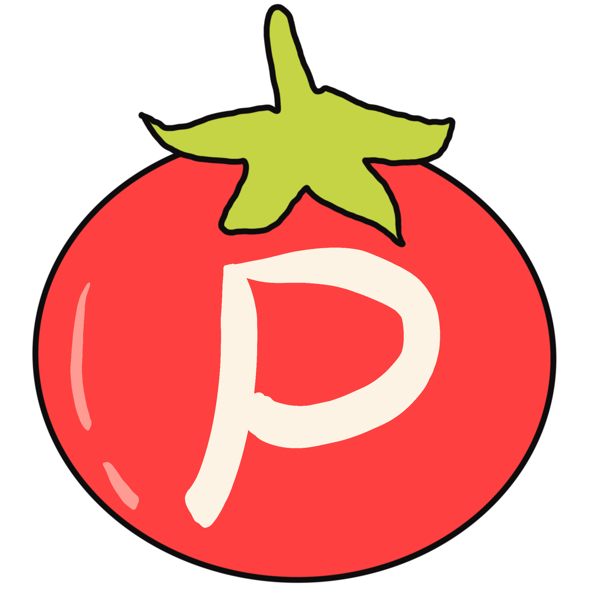

Tomato Project
25:00
Todo List
Add New Task
Edit Task
Settings
Appearance
End Time Display
Enable

⚠️ Reset Timer?
Are you sure you want to reset the timer? Your progress will be lost.
⚠️ Delete Task?
Are you sure you want to delete this task?
⚠️ Clear Completed Tasks?
Are you sure you want to clear completed tasks? This action cannot be undone.
⚠️ Delete All Tasks?
Are you sure you want to delete all tasks? This action cannot be undone.
üçÖ What is Pomodoro?
The Pomodoro Technique is a time management method developed by Francesco Cirillo. It uses a timer to break work into intervals, traditionally 25 minutes in length, separated by short breaks. These intervals are called "Pomodoros." After four Pomodoros, a longer break is taken.